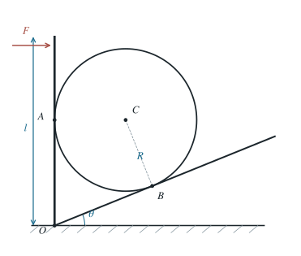

斜面、圆球与铰接板的极限平衡
分别判定球与竖板、球与斜面的先行滑动条件，求推力的临界值。
1 题目
1.1 物理情境
倾角为 的斜面底端有一块长为 的竖直板，板的底端用光滑铰链 与地面相连。质量为 、半径为 的均质圆球夹在斜面与板之间，同时与二者相切。板顶受垂直于板、指向圆球的水平推力 。
1.2 物理过程
从可静止的状态开始缓慢增大 ，求平衡第一次失效的推力。
1.3 已知参数和理想化假设
球—板和球—斜面的静摩擦系数分别为 。板的质量忽略，铰链无摩擦；球始终保持两处接触，且板的接触点低于顶端，即 。静摩擦可以在库仑界限内自行取值。
1.4 求解目标
给出临界推力 与 的关系；区分哪个接触点先滑动，并讨论不存在有限临界推力的参数情形。

图中的球心由到两条切线的距离都等于 确定；斜面接触点 是球心沿斜面法线的垂足。
2 思路与提示
分别把球—板、球—斜面看作可能先滑动的一处。先用板的力矩平衡和球的合力、合力矩平衡求实际摩擦需求，最后比较两处的静摩擦上限。
3 解答展开 / 收起
3.1 先求板的力臂
置 。球心距竖板为 ，距斜面也为 ，故板上的接触点 距铰链的高度为
板只在顶端受水平推力，在 受球施加的水平法向力 ；接触摩擦力沿板，不对 产生力矩。因此关于 的力矩平衡给出
3.2 对球列出三个独立平衡条件
记板与球在 的静摩擦大小为 ，斜面与球在 的为 ；在即将受推向右的接触趋势下，两摩擦力对球分别竖直向下、沿坡向下。两法向力都经过球心，重力也经过球心，因此球心力矩平衡要求
水平和竖直方向的合力分别为零，故
解这两个一次方程得
于是 随 单调增大。题目的关键不是一开始就令 ：在通常情形下，只有一个接触点先到达极限。
3.3 分别求两个候选临界值
若球—板接触先达到 ，把第（5）式代入，定义 ，得
这个候选值只在 时有限。若球—斜面接触先达到 ，同理令 ，得
第（7）式也只在 时表示有限的失稳值。
3.4 比较并处理边界情形
令 。当 时，相应接触点的摩擦比 只会从零趋向 ，不会在有限 达到该界限。因此把不满足 的候选值视为 ，最终答案可写成
两候选值都有限时，也可不用直接比较两个长分式：在 点到达极限之际，第（5）式给出 。故若 ，板侧先滑；若大于，斜面侧先滑；等号时两处同时到达极限。若 ，本理想模型中没有有限的静摩擦失稳推力。
4 方法与讨论
对多接触刚体，先把各摩擦力当作未知的实际静摩擦力，用合力与合力矩求其需求值；最后再施加不等式 。把两个接触都预设为极限会多加一个未经证明的条件。
第（8）式讨论的是保持两处相切、板可转动且构形准静态时的局部平衡。真实系统若有板的弹性、球的形变或几何脱离，还需另行检查这些失效方式。